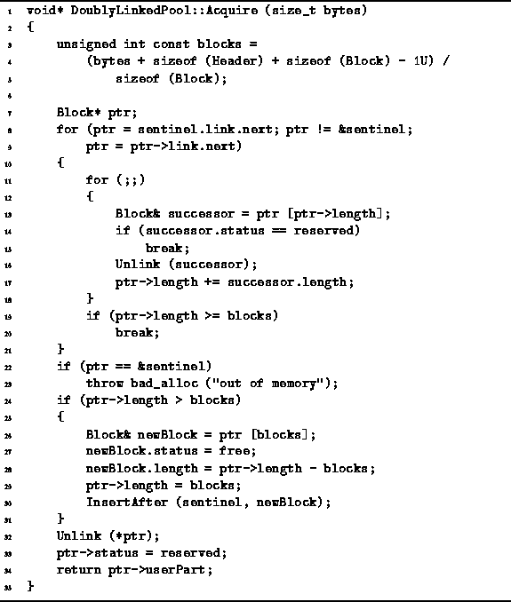
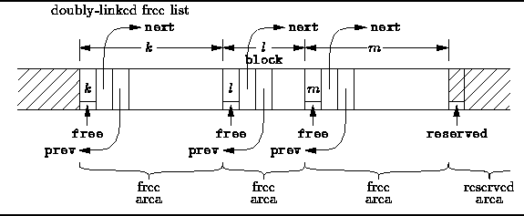

Data Structures and Algorithms
with Object-Oriented Design Patterns in C++
Data Structures and Algorithms
with Object-Oriented Design Patterns in C++
The Acquire function of the DoublyLinkedPool class
is defined in Program  .
This function takes a single integer-valued argument
that specifies the size (in bytes) of the area to be allocated.
Acquire returns a pointer to the storage if there is sufficient
space left in the pool to accommodate the request.
Otherwise, a badalloc exception is thrown.
.
This function takes a single integer-valued argument
that specifies the size (in bytes) of the area to be allocated.
Acquire returns a pointer to the storage if there is sufficient
space left in the pool to accommodate the request.
Otherwise, a badalloc exception is thrown.

Program: DoublyLinkedPool Class Acquire Member Function Definition
In order to find a suitable area in which to allocate space, the Acquire function must traverse the free list. In this case, we choose again to use the first-fit allocation strategy. I.e., storage is allocated in the first area that is large enough.
Recall that the Release function given in the preceding section does not combine adjacent free areas. Therefore, it is the responsibility of the Acquire function to do this. The algorithmic trick is this: Adjacent free areas are recombined while the free list is traversed in search of a free area large enough to accommodate the allocation request!
The Acquire function begins by computing the number of blocks required using the formula
I.e., we need enough space for the requested number of bytes plus a Header (lines 3-5).
Then the Acquire function traverses the free list in search
of an area that is large enough (lines 7-21).
As each area in the free list is visited,
the area that immediately follows the given area in memory
is examined to see if it too is free and, therefore,
if it should be combined with the given area.
Since the size of an area is recorded in its header,
we can easily find the area which follows it in memory
as shown in Figure .
And since the status of an area (free or reserved)
is recorded in the area itself,
we can determine whether the following area is free.

Figure: Using a Doubly-Linked (Unsorted) Free List
If the area which follows a given area is indeed free, then it must in be the free list! And because the free list is doubly-linked, we can easily extract that area from the free list in constant time. This is what the Unlink function on line 16 does.
When combining a given area with the area that follows it in memory, we obtain an area the size of which is equal to the sum of the sizes of the areas that were combined (line 17). After the combining it is possible that the area that follows the new larger area is also free. Therefore we need to repeat the combining process again. This is what the loop on lines 11-18 does--it keeps combining adjacent free areas until the area that follows is a reserved area (lines 14-15).
The search for a free area to satisfy the Acquire request terminates at the first area that is large enough (lines 19-20). Notice that if the entire free list is traversed all the adjacent areas that can be merged will have been merged. If the free list is traversed and an area is not found that is large enough to satisfy the request, then the request cannot be satisfied because there is insufficient contiguous memory to do so. In this case a badalloc exception is thrown (lines 22-23).
When the free area is larger than needed, it is split in two. The size of the first area is set to the number of blocks requested and the size of the second area is equal to the number of blocks that remain. The second area is then inserted into the free list by calling the the InsertAfter member function (lines 24-31).
In all cases, by the time execution reaches line 32, the free area is exactly the correct size. The area is unlinked from the free list and marked reserved (lines 32-33). Finally, a pointer to the userPart of the area is returned (line 34).
At first glance it might seem that the nested for loops
(lines 8 and 11) would result in a worst-case running time of  where n is the number of blocks in the storage pool.
However, the outer loop traverses the free list while
every complete iteration of the inner loop removes one
element from the free list.
As a result, the worst-case running time for the nested loops
is actually only O(n).
where n is the number of blocks in the storage pool.
However, the outer loop traverses the free list while
every complete iteration of the inner loop removes one
element from the free list.
As a result, the worst-case running time for the nested loops
is actually only O(n).
The nice thing about this approach is that the asymptotic running time of the Acquire function would be O(n) even if it did not combine adjacent free areas. In particular, this asymptotic bound is the same as for the singly-linked storage pool. On the other hand, the running time of the Release function is O(1) for the doubly-linked pool which is certainly better than the O(n) worst-case running time of the singly-linked pool. Finally, since the free list is not kept sorted, there is not the same tendency for the short areas to accumulate at the head of the free list as there is in the singly-linked pool.
 Copyright © 1997 by Bruno R. Preiss, P.Eng. All rights reserved.
Copyright © 1997 by Bruno R. Preiss, P.Eng. All rights reserved.